Tribal Survival
No research or power required. Perfect for tribal starts and the first winter.

Drying rack
Air-dry meat into jerky, plants into dried produce, fruit into fruit leather, fungus into dried mushrooms, or mix meat and plants into pemmican — without needing pemmican research.
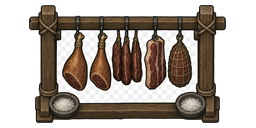
Curing rack
Chip rock salt from stone chunks, then salt-cure raw meat into salted meat that keeps for six weeks and still cooks into meals.

Smokehouse
Cure raw meat into smoked meat that keeps for a month with no freezer. Odyssey owners also get smoked fish.
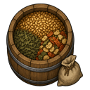
Ingredient barrel
Kitchen staples, sheltered from the weather.
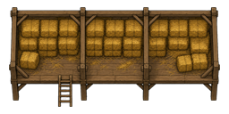
Hayloft
Bulk farm storage for hay, raw plants, and smokeleaf.
Jerky
Trail food and emergency rations.
Fruit leather
Sweet dried fruit sheets for caravans.
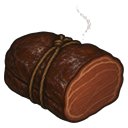
Salted / smoked meat
Freezer-free protein for your cooks.
Farm-to-Table
Turn harvest into storable ingredients and comfort meals. Still no research required.
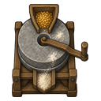
Grain mill
Grind plants into flour. No power needed.
Butter churn
Turn milk into butter for cooking and trade.
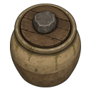
Pickling crock
Ferment vegetables into pickled vegetables (120 days).
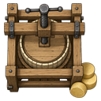
Cheese press
Skim milk into cream, press it into cheese that keeps for two months.

Homestead hearth
Bake bread and hardtack. Simmer porridge, trail stew (jerky + dried produce) and hearty stew (smoked meat + pickles).
Crops & Beekeeping
Four field crops, a three-tree orchard, and an apiary, all feeding the homestead kitchen.
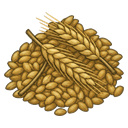
Barley
Mills into flour, cooks into porridge, ferments into mead's cousin: cider's grain sibling.
Pumpkin
A heavy vegetable for stews, pickling, and drying.
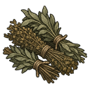
Herbs
Seasoning for the kitchen and leaves for herbal tea.
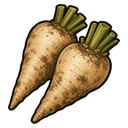
Sugar beet
The homestead's sweetener for jam and brewing.
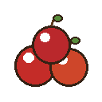
Apple tree
Slow to establish, then baskets of crisp apples for cider, jam, and the fruit bowl.
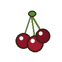
Cherry tree
Heavy clusters of sweet dark cherries — the jam cauldron's favorite fruit.
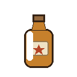
Sugar maple
Harvest maple sap each time the tree matures, boil it down into never-spoiling maple syrup, then griddle up flapjacks — the definitive homestead breakfast.
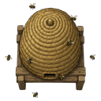
Beehive
A managed hive that steadily produces honey and beeswax — eat it straight, sweeten meals with it, or ferment it into mead.
Brewing
Homestead brewing research unlocks the brewing bench and three drinks.
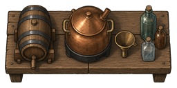
Brewing bench
Ferment cider from fruit, mead from honey, and steep soothing herbal tea from dried herbs.

Cider & mead
Frontier alcohol with milder edges than go-juice.
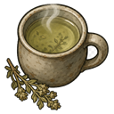
Herbal tea
A warm mood boost with no hangover.
Storage
Every piece protects its contents from deterioration — even outdoors.
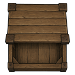
Storage crate
General-purpose lidded crate.
Storage barrel
Weatherproof food storage. Won't slow spoilage — preserve first.

Pallet
Cheap outdoor storage for anything, including stone chunks.

Root cellar
Buried pantry for food and drink through the hot months.
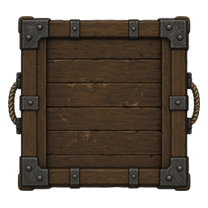
Large storage crate
Reinforced double-wide crate for serious stockpiles.
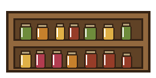
Preserves shelf
Display shelving for jams, pickles, cheese, honey, and syrup — the pantry's pride on show.
Comforts & Recreation
Homestead comforts research furnishes the farmhouse. Apparel and floors need no research.
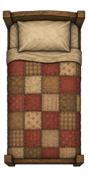
Quilted bed
A hand-stitched quilt over a solid frame.
Rocking chair & log bench
Porch furniture for tired farmers.
Oil lamp & wood stove
Warm light and warm rooms, fueled the old way.
Beeswax candle
Soft, slow-burning light straight from the apiary — no chemfuel, no grid.
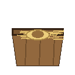
Nesting box
A straw-lined box that small animals sleep soundly in. The hens approve.
Harvest maypole
A ribboned pole colonists gather around for parties and celebrations.
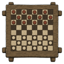
Checkers table & washer toss
Cerebral checkers indoors, dexterous washer toss in the yard.
Diggo the plushie
A hopelessly round plushie — part hippo, part dog, entirely chonky. Colonists flop against its belly to snuggle away their worries. Congrats to a dognamedKats for 1k followers!
Farm apparel
Practical clothing with work and weather bonuses.
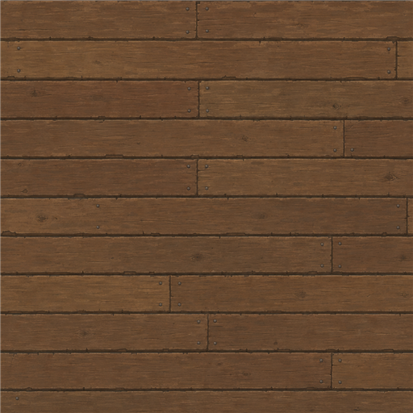
Homestead floors
Cheap rustic flooring for barns, porches, and paths.
Scenario & Trader
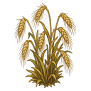
Homesteaders scenario
Strike out to build a self-sufficient farmstead far from civilization. No fancy technology — just animals, seed grain, and the knowledge to live off the land.
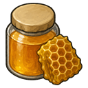
Homestead supplier caravan
A trader stocked with preserved foods, farm goods, seeds, and the occasional Diggo plushie.
Research & Progression
A neolithic-to-industrial homestead research tree. Tier A & B content stays available without research.
├─ Homestead food preservation (800) → Jam cauldron
├─ Farmstead crafting (800)
└─ Homestead brewing (700) → Brewing bench, beehive
├─ Homestead storage (600) → Root cellar, large storage crate
├─ Homestead comforts (600) → quilted bed, rocking chair, oil lamp, wood stove, games
└─ Advanced homestead (1200, needs food preservation + farmstead crafting)
→ Wood-burning generator (300W, burns wood)

Jam cauldron
Boil fruit into jam that keeps for 180 days.
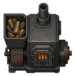
Wood-burning generator
Forest-friendly power for homesteads that run on wood.
Power
A full battery progression, from first wire to endgame vault.

Compact battery
Fits anywhere. Your first buffer against a cloudy day.
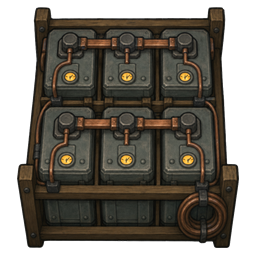
Battery bank
A rack of cells with a smarter charge controller.
Advanced battery
Laminated cells that waste a tenth of what vanilla batteries do.
Ultratech battery
A glowing superconducting vault. The best of the best.

Portable generator
Power for outposts and workshops, one cell of floorspace.
| Battery | Size | Capacity | Efficiency | Research |
|---|---|---|---|---|
| Compact battery | 1×1 | 200 Wd | 50% | Batteries |
| Vanilla battery | 1×2 | 600 Wd | 50% | Batteries |
| Battery bank | 2×2 | 1,600 Wd | 70% | Batteries |
| Advanced battery | 1×2 | 900 Wd | 90% | Fabrication |
| Ultratech battery | 2×2 | 4,000 Wd | 99% | Advanced Fabrication |
Installation
- Download the mod using the button above (or clone the repository).
- Copy the
Homesteaderfolder into your RimWorldModsdirectory. - Enable Homesteader in the in-game mod list and restart.